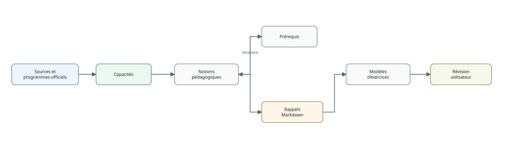

Documentation pédagogique
documentation-pedagogique.Rmd
Organisation de la documentation
pédagogique
La documentation est séparée des programmes officiels. Une notion pédagogique peut être reliée à plusieurs capacités ; les prérequis forment une couche supplémentaire, indépendante du texte réglementaire.
chercher_notions("proportion")
notions_capacite("ITM_MAT_C3_6E_C31")
prerequis_capacite("ITM_MAT_C3_6E_C31", recursif = TRUE)Du niveau au rappel pédagogique
On peut partir d’un niveau, repérer une capacité puis descendre vers les notions :
x = capacites("6E", discipline_id = "MAT", version_id = "2026_2027")
head(x[, c("item_id", "libelle")])
notions_capacite(x$item_id[[1]])Les rappels sont des fichiers Markdown installés avec le package et
accessibles par obtenir_rappel(). Cette séparation permet
d’enrichir les explications, les méthodes ou les exemples sans modifier
les référentiels de programme.
cat(obtenir_rappel("MAT_FRACTION_ADD"))Pour mesurer la documentation disponible à l’échelle d’un niveau,
notions_niveau() complète les fonctions de recherche par
notion.